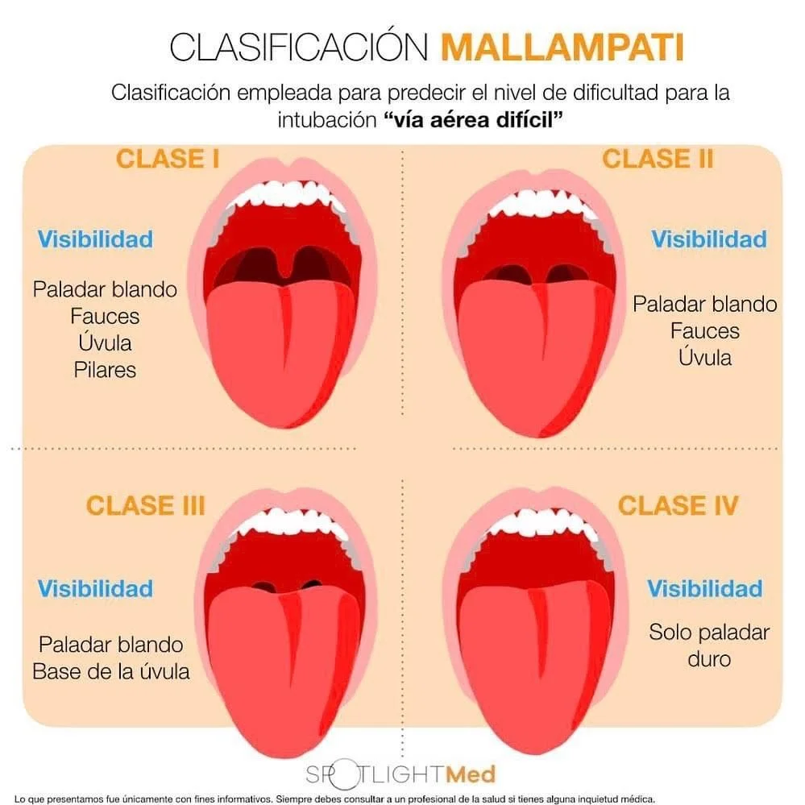

- Asistente de Crisis -
Hospital Arturo Illia
La Paz, Mendoza
Marque cada criterio que esté presente. Un score ≥ 3 predice una alta probabilidad de Vía Aérea Difícil (VAD).
Trauma facial/cuello, obesidad, barba, cuello corto, macroglosia, dentadura anómala.
CUALQUIERA de los siguientes:
1. Apertura oral < 3 dedos.
2. Distancia Mentón-Hioides < 3 dedos.
3. Distancia Hioides-Cartílago Tiroides < 2 dedos.
Incapacidad de ver la úvula o paladar blando. (Sospechado en paciente no colaborador).
Presencia de estridor, voz apagada, epiglotitis, angioedema, o tumor en vía aérea.
Movilidad cervical limitada, collarín cervical, paciente en tabla espinal, artritis reumatoide severa.
Proceda con el plan estándar.
Sin manguito: (Edad / 4) + 4
Con manguito: (Edad / 4) + 3.5
Sin manguito (mm):
-
Con manguito (mm):
-
Adultos. Punta en valécula.
Pediátrico. Levanta epiglotis.
Objetivo: Desnitrogenar los pulmones para crear un reservorio de oxígeno. Esto le da varios minutos de apnea segura antes de la desaturación.
No quite la mascarilla de O₂ hasta el momento exacto de la laringoscopia.
Mientras los fármacos actúan (~45-60s), optimice la posición. Use la "posición de olfateo" (cabeza elevada) o "rampa" en pacientes obesos. Considere la maniobra BURP para mejorar la visualización laríngea.
Con relajación muscular completa, realice la laringoscopia. Visualice las cuerdas vocales e inserte el tubo endotraqueal. Retire la guía e infle el neumotaponador.
El paso más crítico. Confirme la posición con Capnografía de Onda (EtCO₂) (Gold Standard). Ausculte y asegure el tubo. Inicie sedación continua.
¿Se movió el tubo? (ej. extubación, intubación bronquial derecha). Re-evaluar profundidad y auscultar.
¿Está el tubo tapado? (secreciones, sangre, acodamiento). Intentar aspirar con sonda.
¿Pulmón colapsado? (especialmente a tensión). Auscultar, percutir, confirmar con ecografía o Rx.
¿Falló el ventilador? ¿Está desconectado? ¿Se acabó el oxígeno? Revisar circuito desde el paciente hasta la máquina.
Este video es un recurso de apoyo adicional. Asegúrese de que esté completamente cargado y probado sin conexión.
Video de referencia (8Mb). La primera carga (para caché) puede demorar.
Es el objetivo principal de la ISR. Si falla el primer intento, NO insista múltiples veces. Re-oxigene y considere el Plan B.
Si el Plan A falla. Inserte un dispositivo supraglótico (ej. Mascarilla Laríngea) para asegurar la ventilación rápidamente. Es la principal estrategia de rescate.
Si no se puede intubar (Plan A) ni colocar un supraglótico (Plan B), el objetivo inmediato es ventilar al paciente con Bolsa-Mascarilla (Ambú) para re-oxigenar. Pida ayuda experta.
Escenario "No se puede intubar, no se puede ventilar" (CICO). Es el último recurso y debe realizarse de inmediato: Cricotiroidotomía.